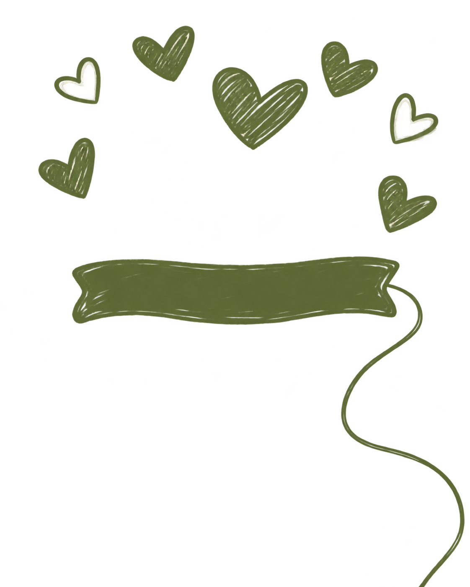
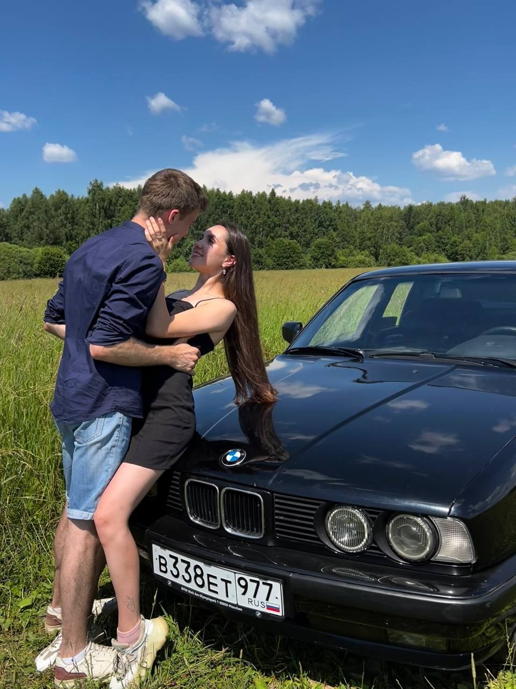

Сбор гостей
Встречаемся, знакомимся и обнимаемся.
У этой истории будет продолжение

Да-да, это мы!
Время пронеслось незаметно,
и у этих двух милых детей
скоро свадьба!

Никита + Настя = ♡

Мы приглашаем вас разделить с нами
самый тёплый и счастливый день.
Будем обниматься, танцевать
и создавать новые воспоминания.
Воскресенье · 13 июня 2027
Сбор гостей в 15:30
Адрес для макета. Точную площадку добавим позже.
Проложить маршрутВстречаемся, знакомимся и обнимаемся.
Те самые важные слова.
Тосты, улыбки и самые близкие рядом.
Сладкий финал и любимые песни.
Время пока примерное.
Будем благодарны, если вы поддержите
цветовую палитру нашей свадьбы.
Белый образ оставим невесте.
Приходите в том, в чём вам красиво и комфортно.
Вместо букета в день торжества можно поддержать нашу цветочную подписку — пусть ваши цветы радуют нас и после свадьбы.
Мы соберём новости, подсказки и фотографии в общем чате нашего праздника.
Чтобы мы могли сделать праздник ещё уютнее,
ответьте на несколько вопросов.
До 13 июня 2027, 15:30 МСК · время для макета
Никита и Настя
13.06.2027 А морковка будет?
А морковка будет?